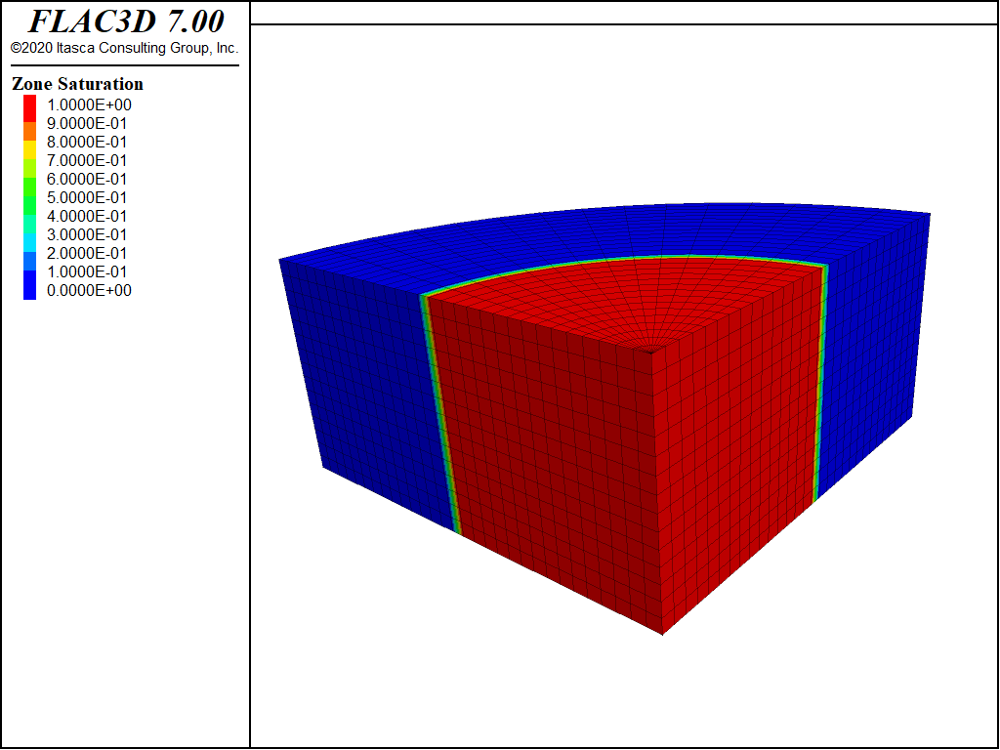
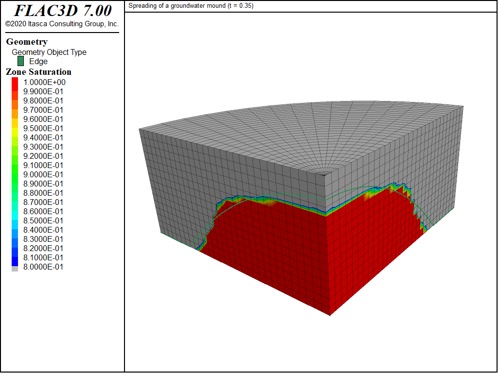
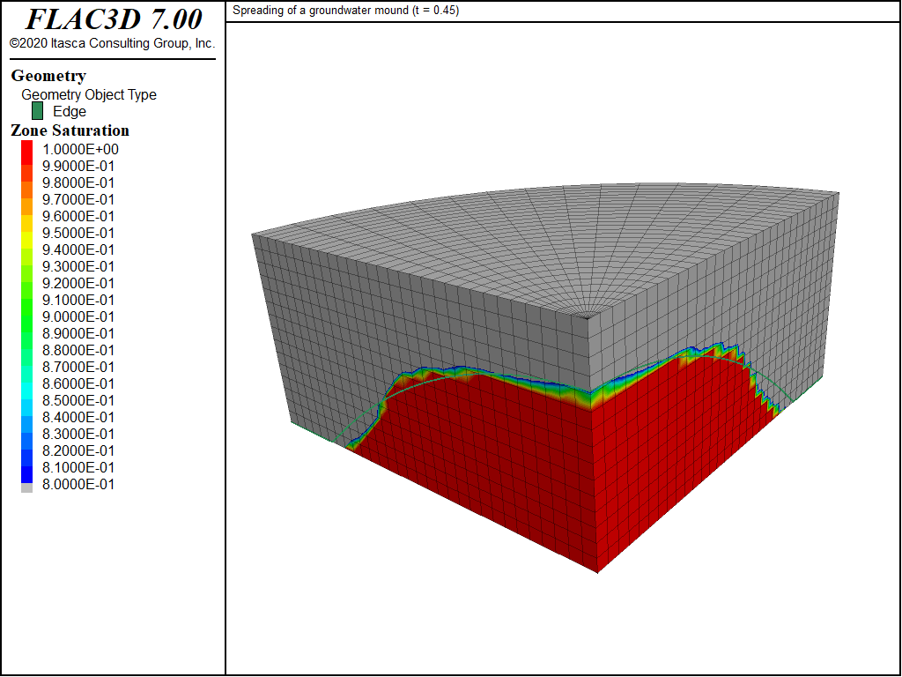
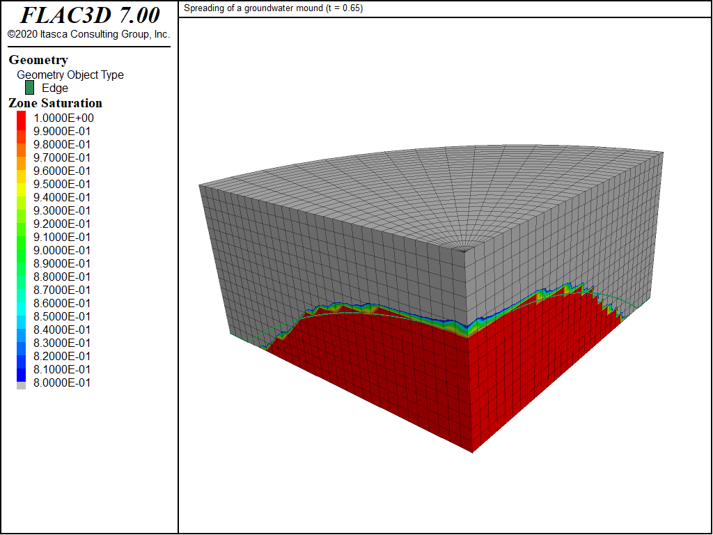
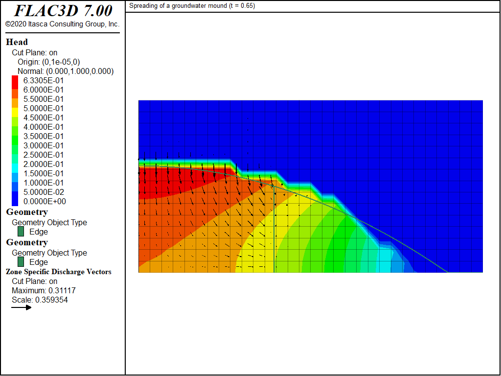

地下水丘的扩展
注意
要在 FLAC3D 中查看此工程，请使用菜单命令 。选择“Fluid/GroundwaterMound”，再选择“GroundwaterMound.f3dprj”即可加载。该工程的主数据文件（main data files）在本示例末尾给出。
本问题研究多孔介质中地下水丘的瞬态演化。水丘在重力作用下扩展并沿不透水基座流动。假定流体不可压缩，且水最初包含在半径为 \(r_{0}\)、高度为 \(h_{0}\) 的圆柱形区域内。水丘内的水饱和度为 1，且达西定律适用。将水丘高程随时间演化的结果与解析解进行比较。
Kochina 等（1983）推导了水丘高度 \(h\) 的解。Barenblatt（1987）给出的该解假定水丘内孔隙压力呈静水分布。在残余饱和度为零的情况下，该解可表示为如下形式
其中 \(\hat{h} = h/h_{0}\)、\(\hat{r} = r/r_{0}\)、\(\hat{t} = t/t_{c}\)，特征时间由 \(t_{c} = r_{0}^{2}/(2\kappa h_{0})\) 给出，且 \(\kappa = k\rho _{w}g/(2n)\)（\(k\) 为迁移系数，\(\rho _{w}\) 为水的密度，\(g\) 为重力加速度，\(n\) 为孔隙率）。
该解适用于长时间尺度，即初始水丘几何细节的影响已消失之时。
结果以无量纲形式给出：采用缩放几何参数 \(r_{0}\) = 1、\(h_{0}\) = 1，并在数值模拟中规定缩放后的水性质 \(k\) = 0.5 × 10-4、\(\rho _{w}\) = 103 和 \(n\) = 0.5。为模拟不可压缩流动，流体体积模量 \(K_{f}\) 取为远大于模拟中孔隙压力变化的值（\(K_{f}\) = 2 × 105）；重力加速度取 \(g\) = 10。FLAC3D 网格对应四分之一圆柱，包含 2000 个网格单元（见图 1（Figure 1））。模型半径为 2，高度为 1 个单位。水丘内（半径 = 1 个单位，高度 = 1 个单位）的初始饱和度为 1，其外为零。水丘内的初始孔隙压力分布为静水压力分布。默认情况下所有边界均不透水。随时间推移，水丘在自重作用下扩展。模拟的总无量纲时间值为 \(\hat{t}\) = 0.85，中间结果分别在 \(\hat{t}\) = 0.35、0.45 和 0.65 时给出。


图 1：FLAC3D 网格与饱和柱体的初始状态。
饱和度云图绘于图 2（Figure 2） 至图 5（Figure 5）。水丘高度的解析预测由一组 FISH 函数计算，并作为粗线绘于各图中以作比较。
图 2（Figure 2） 对应于 \(\hat{t}\) = 0.35；此时水丘的初始形状仍然保持，与解析解进行比较可能尚不合适。对于更长的时间（见图 3（Figure 3） 至图 5（Figure 5）），方程(1)所描述的地下水丘扩展被数值解以合理精度捕捉。数值估计滞后于解析预测；这种差异可归因于数值解中出现残余饱和度，以及模拟中采用了较粗的离散化。


图 2：\(\hat{t}\) = 0.35 时的饱和度云图与解析水丘高程。


图 3：\(\hat{t}\) = 0.45 时的饱和度云图与解析水丘高程。

图 4：\(\hat{t}\) = 0.65 时的饱和度云图与解析水丘高程。


图 5：\(\hat{t}\) = 0.85 时的饱和度云图与解析水丘高程。
图 6（Figure 6） 中的渗流矢量和等水头线图对应于 \(\hat{t}\) = 0.85。（云图不够光滑是由于潜水面两侧存在水头跃变。）图中可见两个区域：水丘核心区水流以向下为主，而外围区水流向外。（竖直粗线绘于解析水丘高程对时间的导数为零的位置：\(\partial \hat{h}/\partial t\) = 0。）


图 6：\(\hat{t}\) = 0.85 时的水头云图与解析水丘高程
参考文献
Barenblatt, G. Dimensional Analysis. Gordon and Breach Science Publishers (1987).
Kochina, I., N. Mikhailov and M. Filinov. “Groundwater Mound Damping,” Int. J. Engng. Sci., 21, 413-421 (1983).
数据文件
GroundwaterMound.dat
model new
model large-strain off
fish automatic-create off
model configure fluid
; --- 几何形状 ---
zone create cylinder size 30 15 15 point 1 (0 2 0) point 2 (0 0 1) ...
point 3 (2 0 0
; --- 流体流动模型 ---
zone fluid cmodel assign isotropic
zone fluid property permeability 0.5e-4 porosity 0.5 biot 1
zone fluid biot on
zone gridpoint initialize biot 1e5
; 如果指定流体模量：
;zone fluid biot off
;zone gridpoint initialize fluid-modulus 0.5e5
zone initialize fluid-density 1e3
zone gridpoint initialize fluid-tension 0
; --- 初始条件 ---
model range create 'mound' cylinder end-1 0 0 -1 end-2 0 0 2 radius 1.01
zone gridpoint initialize saturation 0.0
zone gridpoint initialize saturation 1.0 range named-range 'mound'
zone gridpoint initialize pore-pressure 1e4 grad 0 0 -1e4 ...
range named-range 'mound'
; --- 设置 ---
model gravity 0 0 -10
model mechanical active off
model fluid active on
model save 'mound0'
; --- 试验 ---
model solve fluid time-total 0.35
model title "Spreading of a groundwater mound (t = 0.35)"
model save 'mound1'
model solve fluid time-total 0.45
model title "Spreading of a groundwater mound (t = 0.45)"
model save 'mound2'
model solve fluid time-total 0.65
model title "Spreading of a groundwater mound (t = 0.65)"
model save 'mound3'
model solve fluid time-total 0.85
model title "Spreading of a groundwater mound (t = 0.85)"
model save 'mound4'
| 这些内容对您有帮助吗？… | FLAC3D © 2019, Itasca | 原文更新于 2020 年 10 月 8 日 |
| 版权与免责声明 | ||